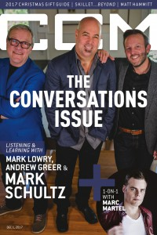

CMnexus
: Contemporary Christian culture, music, and media.
|
|
Mark SchultzOn the cover|  | 1 December 2017
CCM Digital | Media coverage:- Jun 2000 in CCM "Talent Pool: Available at Wal-Mart", by Dan Ewald
- Oct 2000 in CCM "On The Beat: He's My Son Strikes a Chord With General Market Radio Listeners", by Angela G. King
- May 2001 in Campus Life "Meet...: Mark Schultz", by Autumn Flutur
- Aug 2001 in CCM "10 Questions With: Mark Schultz", by Brad England, Adam Woodroof
- Oct 2001 in CCM "On Tour: Faith Temple Assembly of God, Plant City, FL", by Natalie Nichols Gillespie
- Nov 2001 in CCM "Reality Check", by Wendy Lee Nentwig
- May 2003 in CCM "Insider: On The Fly: Mammas' Boys", by Christina Farris
- Nov 2003 in CCM "Happy Endings", by Stephanie Ottosen
- Jan 2004 in CCM "Standing Room Only: Couch Concert, Park Ridge, IL", by Andy Argyrakis
- Oct 2006 in CCM "The Storytelling Song", by David McCreary
- Nov 2006 in CCM "5 Questions With: Mark Schultz"
- Jan 2007 in CCM "The Art of Voting", by Jay Swartzendruber
- Apr 2007 in CCM "Freedom Writers", by Lizza Connor
- Jul 2007 in CCM "Mark Across America", by Caroline Lusk
- Jul 2007 in New Man "Guy Gear: Music: The Beauty of Adoption"
- Apr 2010 in CCM Digital "Hope Continued", by Matt Conner
- Sep 2012 in CCM Digital "Your World: Man on a Mission", by Caroline Lusk
- 1 Dec 2017 in CCM Digital "The Christmas Shift", by Andrew Greer
Albums & reviews:2000: Mark Schultz2001: Song Cinema2003: Stories & Songs2005: Live: A Night of Stories & Songs2006: Broken and Beautiful2009: Come Alive2011: Renaissance2011: The Best of Mark Schultz2012: Mark Schultz2012: All Things Possible2018: Follow Award Summary (Nominations / Wins)Dove Awards2002 Dove Awards2003 Dove Awards- Song: "Back In His Arms Again"
- Male Vocalist
- Pop/Contemporary Recorded Song: "Back In His Arms Again"
2004 Dove Awards- Song: "You Are A Child Of Mine"
- Male Vocalist
- Pop/Contemporary Album: Stories & Songs
- Pop/Contemporary Recorded Song: "You Are a Child of Mine"
2005 Dove Awards- Short Form Music Video: "Letters From War"
- Pop/Contemporary Recorded Song: "Letters From War"
2006 Dove Awards2007 Dove Awards- Pop/Contemporary Album: Broken and Beautiful
- Pop/Contemporary Recorded Song: "Broken And Beautiful"
2008 Dove Awards2010 Dove Awards- Male Vocalist
- Pop/Contemporary Album: Come Alive
2019 Dove AwardsBooks about Mark Schultz- "Mark Schultz" in The Encyclopedia of Contemporary Christian Music (Mark Allan Powell, 2002)
|
|